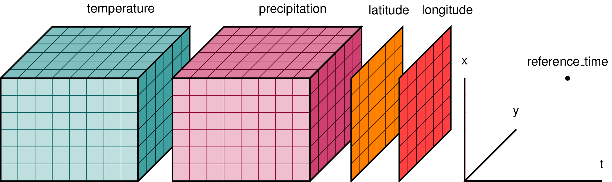
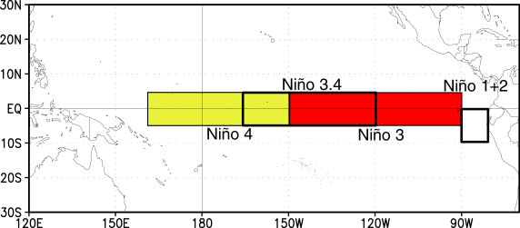

Getting and Reading Data for Today's Class
Overview
Teaching: 0 min
Exercises: 0 minQuestions
How do I find and read in the data for today’s class?
What is an xarray.Dataset?
Objectives
Getting Started
-
Launch a Jupyter notebook on a COLA server. As a reminder, its best to launch it from your home directory, then you can get to any other directory from within your notebook.
-
Create a new notebook and save it as Subsetting.
-
Import the standard set of packages we use:
import xarray as xr
import numpy as np
import cartopy.crs as ccrs
import matplotlib.pyplot as plt
Find our Dataset
Today we will work with datasets that are on the COLA servers and findable using the COLA Data Catalog. We will start by using monthly Sea Surface Temperature (SST) data.
Go to the COLA Data Catalog
Browse the main catalog and follow the links to obs->gridded->ocn->sst->oisstv2_monthly
Let’s take a look at our dataset and what we can learn about it from the catalog:
- It is 1deg x 1deg
- Latitudes go from 89.5N to 89.5S – that seems backwards
- It goes from Dec 1981 to Apr 2020
- It was last updated on the COLA Servers on Jun 25, 2020
- It is located in the ‘/shared/obs/gridded/OISSTv2` directory
Now we will take a look at the data on COLA by opening a terminal in our Jupyter Notebook and looking in the directory wehere the data are located:
$ ls /shared/obs/gridded/OISSTv2
lmask monthly weekly
Since we are looking for monthly data, let’s look in the monthly sub-directory. Remember, you can use the up-arrow to avoid having to re-type:
$ ls /shared/obs/gridded/OISSTv2/monthly
sst.mnmean.nc
Quick look at Metadata for our Dataset
What command can you use to look at the metadata for our dataset and confirm that it matches the COLA Data Catalog?
Solution
ncdump -h /shared/obs/gridded/OISSTv2/monthly/sst.mnmean.nc
We can now use cut and paste to put the file and directory information into our notebook and read our dataset using xarray
file='/shared/obs/gridded/OISSTv2/monthly/sst.mnmean.nc'
ds=xr.open_dataset(file)
ds
When we run our cells, we get output that looks exactly like the COLA Data Catalog and the results from ncdump -h
It tells us that we have an xarray.Dataset and gives us all the metadata associated with our data.
What is an xarray.Dataset?
In climate data analysis, we typically work with multidimensional data. By multidimensional data (also often called N-dimensional), I mean data with many independent dimensions or axes. For example, we might represent Earth’s surface temperature T as a three dimensional variable:
T(x,y,t)
where x is longitude, y is latitude, and t is time.

Xarray has two data structures:
- a
DataArraywhich holds a single multi-dimensional variable and its coordinates - a
Datasetwhich can hold multiple variables that potentially share the same coordinates
When we read in our data using xr.open_dataset, we read it in as an xr.Dataset.
A DataArray contains:
- values: a
numpy.ndarrayholdy the array’s values - dims: dimension names for each axis (e.g.
lon,lat,lev,time) - coords: a container of arrays that label each point
- attrs: a container of arbitrary metadata
If we access an individual variable within an xarray.Dataset, we have an xarray.DataArray. Here’s an example:
ds['sst']
you will also see this syntax used
ds.sst
Compare the output for the DataArray and the Dataset
We can access individual attribues attrs of our Dataset using the following syntax:
units=ds['sst'].attrs['units']
print(units)
Using
xarray.Dataset.attrsto label figuresGiven the following lines of code, how would you use
attrsto add units to the colorbar and a title to the map based on theunitsandlong_nameattributes?plt.contourf(ds['sst'][0,:,:]) plt.title(FILLINLONGNAMEHERE) plt.colorbar(label=FILLINUNITSHERE)
The Xarray package provides many convenient functions and tools for working with N-dimensional datasets. We will learn some of them today.
Key Points
Subsetting Data
Overview
Teaching: 0 min
Exercises: 0 minQuestions
How do I extract a particular region from my data?
How do I extract a specific time slice from my data?
Objectives
Subsetting data in Space
Often in our research, we want to look at a specific region defined by a set of latitudes and longitudes.
Conventional approach
We would have an array, like an numpy.ndarray with 3 dimensions, such as lat,lon,time that contains our data. We would need to write nested loops with if statements to find the indices of the latitudes and longitudes we are looking for and then extract out those data to a new array.
This is slow, and has the potential for mistakes if we get the wrong indices. Our data and metadata are disconnected.
xarray makes it possible for us to keep our data and metadata connected and select data based on the dimensions, so we can tell it to extract a specific lat-lon point or select a specific range of lats and lons using teh sel function.
Select a point
Let’s try it for a point. We will pick a latitude and longitude in the middle of the Pacific Ocean.
ds_point=ds.sel(lat=0,lon=180,method='nearest')
ds_point
We now have a new xarray.Dataset with all the times and a single latitude and longitude point. All the metadata is carried around with our new Dataset. We can plot this timeseries and label the x-axis with the time information.
plt.plot(ds_point['time'],ds_point['sst'])
Select a Region
A common region to look at SSTs is the Nino3.4 region. It is defined as 5S-5N; 170W-120W.

Our longitudes are defined by 0 to 360 (as opposed to -180 to 180), so we need to specify our longitudes consitent with that. To select a region we use the sel command with slice
ds_nino34=ds.sel(lon=slice(360-170,360-120),lat=slice(-5,5))
ds_nino34
Notice that we have no latitudes, what happened?
Our data has latitudes going from North to South, but we sliced from South to North. This results in sel finding no latitudes in the range. There are two options to fix this: (1) we can slice in the direction of the latitudes `lat=slice(5,-5)) or (2) we can reverse the latitudes to go from South to North. Let’s reverse the latitudes.
ds=ds.reindex(lat=list(reversed(ds['lat'])))
This line reverses the latitudes and then tells xarray to put them back into the latitude coordinate. But, since xarray keeps our metadata attached to our data, we can’t just reverse the latitudes without telling xarray that we want it to attach the reversed latitudes to our data instead of the original latitudes. That’s what the reindex function does.
Now we can slice our data from 5S to 5N
ds_nino34=ds.sel(lon=slice(360-170,360-120),lat=slice(-5,5))
ds_nino34
Now, let’s plot our data
plt.contourf(ds_nino34['lon'],ds_nino34['lat'],
ds_nino34['sst'][0,:,:],cmap='RdBu_r')
plt.colorbar()
Time Slicing
Sometimes we want to get a particular time slice from our data. Perhaps we have two datasets and we want to select the time slice that is common to both. In this dataset, the data start in Dec 1981 and end in Apr 2020. Suppose we want to extract the times for which we have full years (e.g, Jan 1982 to Dec 2019. We can use the sel function to also select time slices. Let’s select only these times for our ds_nino34 dataset.
ds_nino34=ds_nino34.sel(time=slice('1982-01-01','2019-12-01'))
ds_nino34
Writing data to a file
In this case the dataset is small, but saving off our intermediate datasets is a common step in climate data analysis. This is because our datasets can be very large so we may not want to wait for all our analysis steps to run each time we want to work with this data. We can write out our intermediate data to a file for future use.
It is easy to write an
xarray.Datasetto a netcdf file using theto_netcdf()function.Write out the ds_nino34 dataset to a file in your /scratch directory, like this (replace my username with yours):
ds_nino34.to_netcdf('/scratch/kpegion/nino34_1982-2019.oisstv2.nc')Bring up a terminal window in Jupyter and convince yourself that the file was written and the metatdata is what you expect by using ncdump
Key Points
Aggregating Data
Overview
Teaching: 0 min
Exercises: 0 minQuestions
How to I aggregate data over various dimensions?
Objectives
The Oceanic Nino Index (ONI) is used by the Climate Prediction Center to monitor and predict El Nino and La Nina. Oceanic Nino Index. It is defined as the 3-month running mean of SST anomalies in the Nino3.4 region. We will use aggregation methods from xarray to calculate this index.
First Steps
Create a new notebook and save it as Aggregating.
Import the standard set of packages we use:
import xarray as xr
import numpy as np
import cartopy.crs as ccrs
import matplotlib.pyplot as plt
Read in the dataset we wrote in the last notebook.
file='/scratch/kpegion/nino34_1982-2019.oisstv2.nc'
ds=xr.open_dataset(file)
ds
Take the mean over a lat-lon region
ds_nino34_index=ds.mean(dim=['lat','lon'])
ds_nino34_index
Our data now has only a time dimension. Make a plot.
plt.plot(ds_nino34_index['time'],ds_nino34_index['sst'])
Calculate Anomalies
Anomaly means departure from normal (called climatology). We often calculate anomalies for working with climate data. We will spend time in a future class learning about calculating climatology and anomalies using another feature of xarray called groupby. Today, I will show you the steps with little explanation.
ds_climo=ds_nino34_index.groupby('time.month').mean()
ds_anoms=ds_nino34_index.groupby('time.month')-ds_climo
ds_anoms
Plot our data.
plt.plot(ds_anoms['time'],ds_nino34_index['sst'])
Why do I constantly print and plot the data?
Printing the data so I can see its dimensions after each step provides a check on whether my code did what I intended it to do.
Plotting also gives me a quick look to make sure everything makes sense.
I encourage you to do the same when developing and testing new code!
Rolling (Running Means)
The ONI is calculated using a 3-month running mean. This can be done using the rolling function.
Reading and Learning from Documentation
Read the documentation for the
xarray.rollingfunction. Following their example, make a 3-month running mean of theds_anomsdata.Solution
ds_3m=ds_anoms(time=3,center=True).mean().dropna(dim='time') ds_3m
Let’s plot our original and 3-month running mean data together
plt.plot(ds_anoms['sst'],color='r')
plt.plot(ds_3m['sst'],color='b')
plt.legend(['orig','smooth'])
Some other aggregation functions
There are a number of other aggregate functions such as:
std,’min’,’max’,’sum’, among others.Using the original dataset in this notebook
ds, find and plot the maximum SSTs for each gridpoint over the time dimension.Solution
ds_max=ds.max(dim='time') plt.contourf(ds_max['sst'],cmap='Reds') plt.colorbar()Using the original dataset in this notebook
ds, calculate and plot the standard deviation at each gridpoint.Solution
ds_std=ds.std(dim='time') plt.contourf(ds_std['sst'],cmap='RdBu_r') plt.colorbar()
Key Points